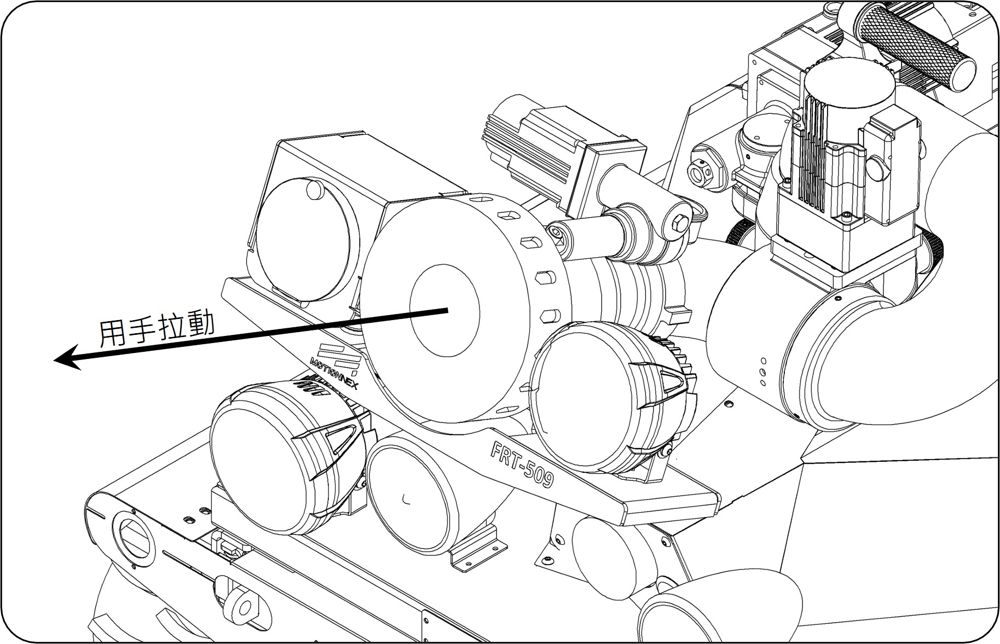
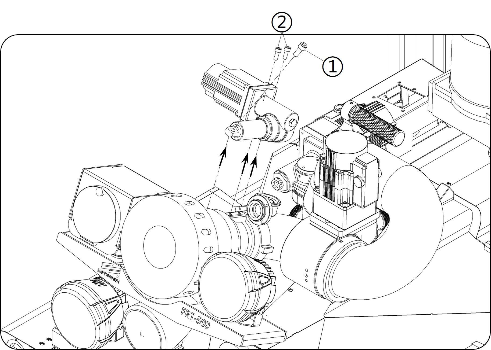
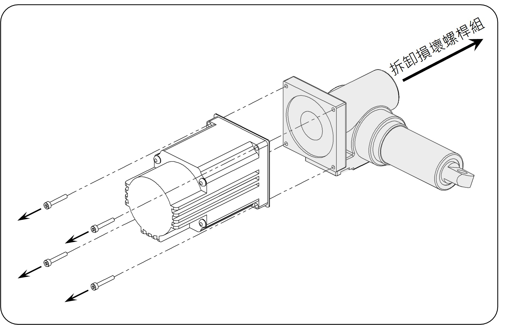

SOP-07：馬達動力傳動組更換
故障描述： 無法切換水柱/水霧
原因分析： 螺桿損壞
| 項目 | 品名 / 料號 | 數量 |
|---|
| 一般工具 | 六角板手組、一字起子 | - |
| 零組件 | 馬達動力傳動組 (393070003/393070002) | 1 組 |
1. 故障判斷
操作遙控器切換水柱/水霧時，若只有馬達聲且無動作，可用手嘗試拉動瞄子（如圖1箭頭方向）。若能輕易拉動，代表螺桿已斷裂，需進行更換。

圖 1：手動測試瞄子是否斷裂
2. 拆卸瞄子固定螺絲
使用六角板手將瞄子上的固定螺絲 ①（M6x16）及固定座螺絲 ②（M8x16）拆卸下來。
🔧 工具：六角板手組

圖 2：拆卸固定螺絲 ① 與 ②
3. 拆卸馬達螺桿
使用六角板手將馬達上的四根螺桿拆卸下來。
🔧 工具：六角板手組

圖 3：拆卸馬達上的四根螺桿
4. 線路拆卸與更換
使用一字起子拆卸馬達動力傳動組的電控線路，並換上新的馬達動力傳動組。
🔧 工具：一字起子
⬅️ 回到目錄首頁